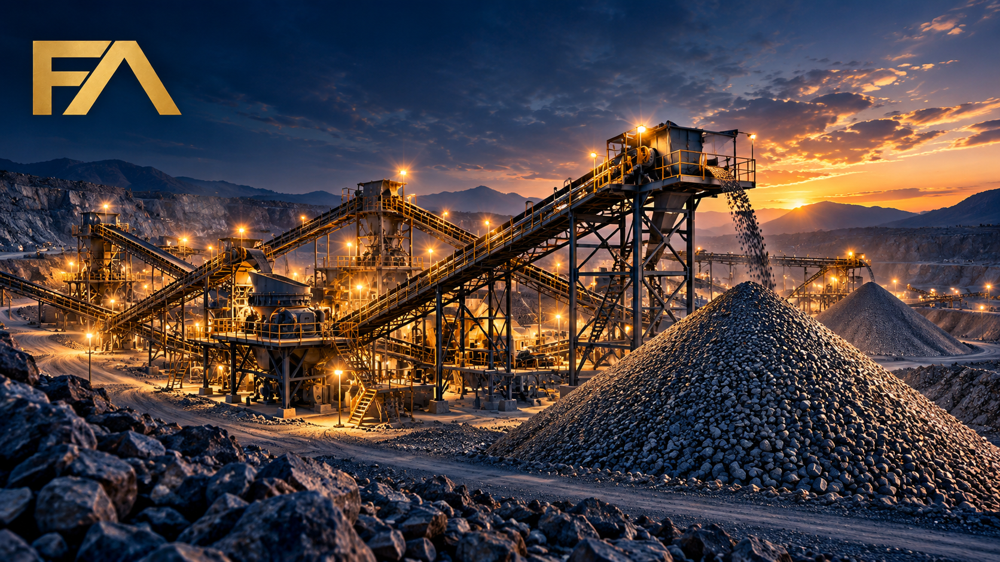
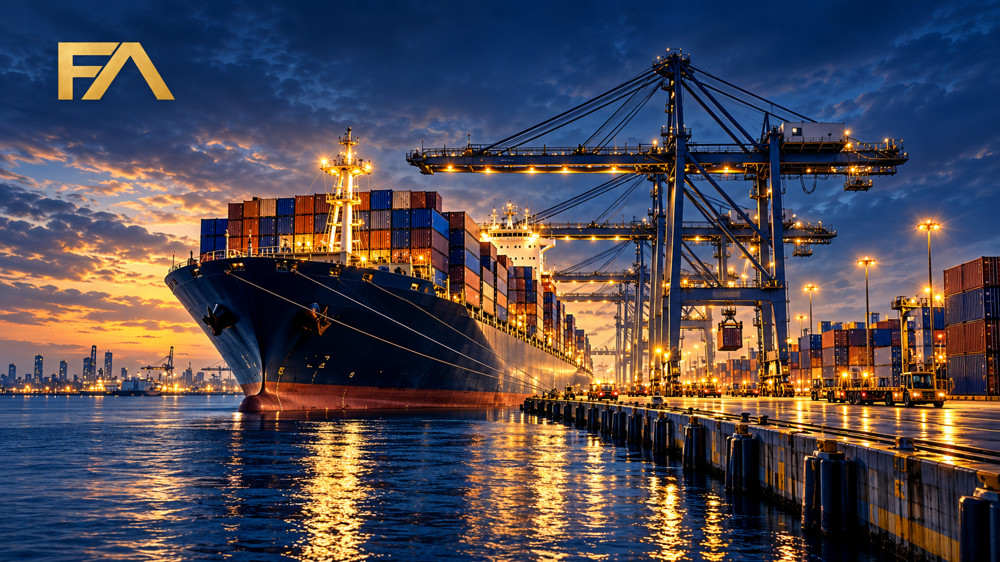
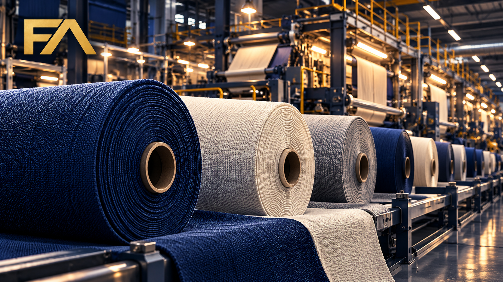
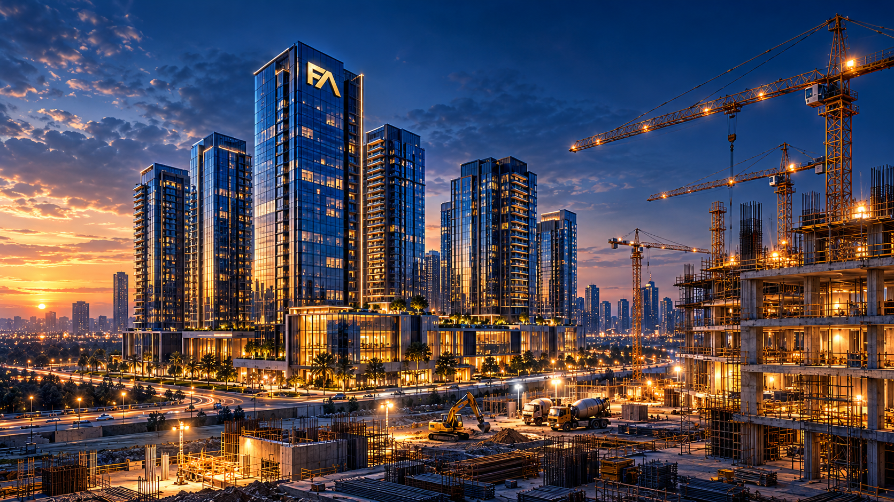
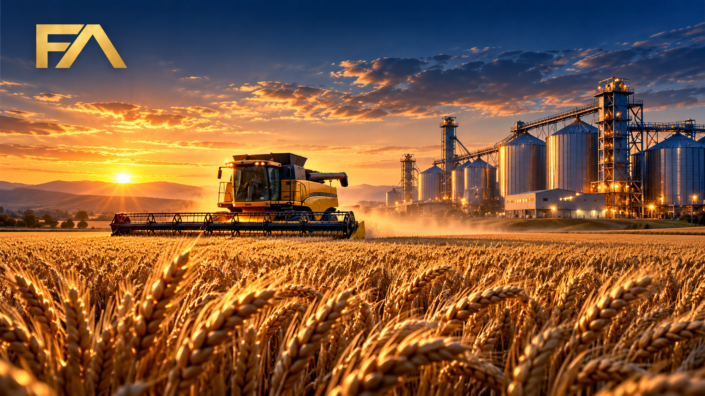

گروه بینالمللی فرا
فراتر از مرزها، هممسیر با آینده

تجهیزات صنایع معدنی

حملونقل و لجستیک
صادرات و واردات
نفت، گاز و پتروشیمی

نساجی و منسوجات

عمران و سرمایهگذاری ملکی

کشاورزی و کشت و صنعت
تجارت، صنعت و سرمایهگذاری